Generated 2026-10-03T13:19:41
H3: Rebuilding disease incidence from NIS 2021-2023 with an independent extraction pipeline, using the incidence definition established by Newman-Toker et al. (2024), tests whether the published harm-concentration pattern among high-risk diseases holds steady.
| criterion | name | result | threshold | met |
|---|---|---|---|---|
| 1 | Disease-specific incidence relative difference | 50% of phenotypes within threshold | |rel diff| <= 25% for >= 50% of phenotypes | yes |
| 2 | Rank-correlation of harm rankings | Spearman r = 0.782 (10 NIS-derived phenotypes) | r >= 0.70 | yes |
| 3 | Top-5 harm-concentration difference | 43.9% vs 38.7% (5.2 pp) | <= 5.0 pp | no |
| 4 | Top-15 harm-concentration difference | 54.5% vs 50.7% (3.8 pp) | <= 5.0 pp | yes |
| 5 | Category-level burden-share stability | max category shift 6.2 pp; published share in interval for 2/3 categories | descriptive | descriptive |
| 6 | Total serious-harm relative difference | +23.9% | |rel diff| <= 20% | no |
| 7 | Monte Carlo uncertainty overlap | 4/4 headline intervals overlap | all overlap | yes |
| 8 | DX1-only sensitivity comparison | DX1-only reduction 24.5% vs published 30.9% (6.5 pp) | <= 15 pp | yes |
| role | year | n_discharges | weighted_n_discharges | mean_n_dx_filled | age_coverage | mean_age | female_share | elective_share | weekend_share |
|---|---|---|---|---|---|---|---|---|---|
| train | 2021 | 6666752 | 33,333,720.0 | 13.2877 | 1.0000 | 49.8089 | 0.5510 | 0.1719 | 0.2162 |
| validation | 2022 | 6578372 | 32,891,849.0 | 13.5009 | 0.9998 | 50.0011 | 0.5537 | 0.1710 | 0.2160 |
| test | 2023 | 6743716 | 33,718,585.0 | 13.7491 | 0.9999 | 50.7788 | 0.5526 | 0.1704 | 0.2163 |
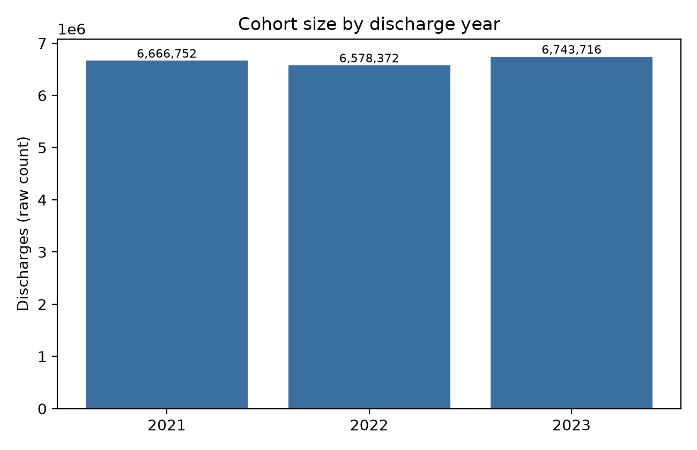
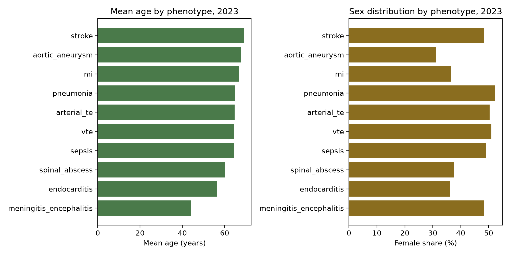
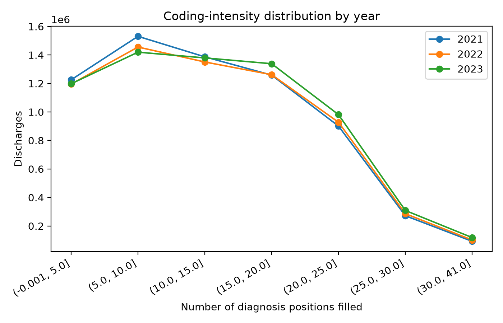
Three-year (2021-2023) mean of DISCWT-weighted annual incidence, DX1 or DX2, in thousands; 95% CI from a discharge-level bootstrap.
| disease | category | published_thousands | rederived_thousands | rederived_ci_low_thousands | rederived_ci_high_thousands | absolute_difference_thousands | relative_difference |
|---|---|---|---|---|---|---|---|
| stroke | vascular | 952 | 768.0 | 765.5 | 784.3 | -184.0 | -0.1933 |
| vte | vascular | 320 | 487.1 | 479.7 | 495.3 | 167.1 | 0.5221 |
| arterial_te | vascular | 173 | 30.4866 | 28.9196 | 32.5469 | -142.5 | -0.8238 |
| aortic_aneurysm | vascular | 96 | 125.1 | 121.3 | 128.7 | 29.1183 | 0.3033 |
| mi | vascular | 1242 | 988.9 | 980.3 | 1,002.3 | -253.1 | -0.2038 |
| sepsis | infection | 1345 | 2,947.5 | 2,929.2 | 2,966.3 | 1,602.5 | 1.1915 |
| pneumonia | infection | 1469 | 1,677.0 | 1,670.7 | 1,698.9 | 208.0 | 0.1416 |
| meningitis_encephalitis | infection | 47 | 51.6200 | 49.4788 | 54.1204 | 4.6200 | 0.0983 |
| spinal_abscess | infection | 14 | 18.2600 | 17.0976 | 19.9751 | 4.2600 | 0.3043 |
| endocarditis | infection | 34 | 31.9283 | 30.1696 | 33.9054 | -2.0717 | -0.0609 |
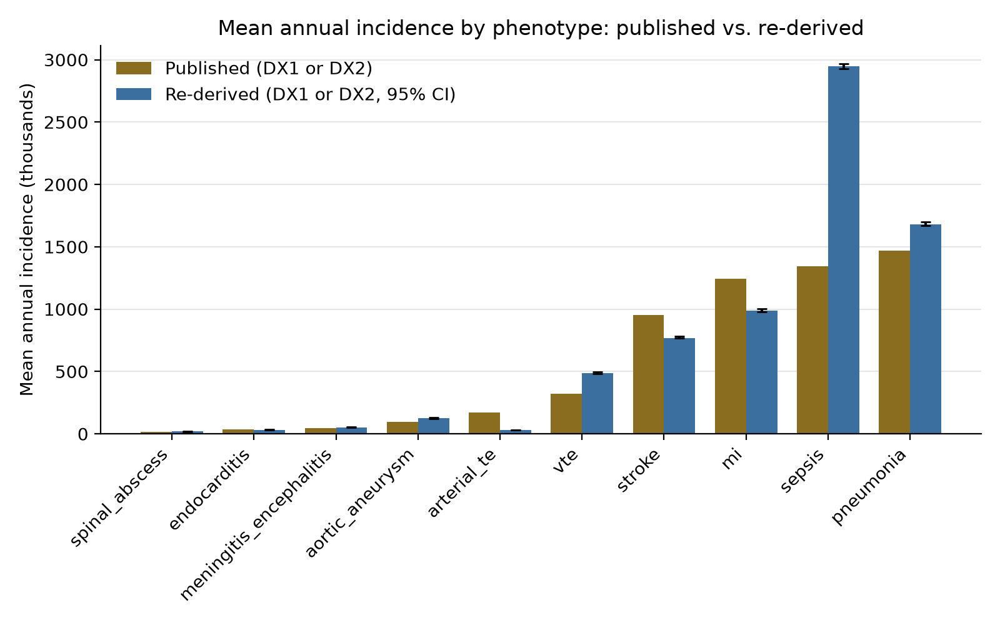
Harm = incidence × published serious-harm rate. Published harm is the point-estimate product on published incidence; re-derived harm uses NIS incidence (cancers use registry incidence in both), with Monte Carlo median and 95% simulation interval. Ranks are by point harm, 1 = highest: published_rank/rederived_rank among all fifteen, *_rank_10 among the ten NIS-derived phenotypes.
Criterion 2 is the Spearman correlation over the ten NIS-derived phenotypes only. The five cancers use published registry incidence in both structures, so their harms are identical by design; including them would inflate the correlation without testing the independent extraction.
| disease | category | published_incidence_thousands | rederived_incidence_thousands | harm_rate | published_harm_thousands | rederived_harm_thousands | rederived_harm_mc_median | rederived_harm_mc_p2_5 | rederived_harm_mc_p97_5 | published_harm_in_mc_interval | published_rank | rederived_rank | rank_change | independent | published_rank_10 | rederived_rank_10 | rank_change_10 |
|---|---|---|---|---|---|---|---|---|---|---|---|---|---|---|---|---|---|
| stroke | vascular | 952 | 768.0 | 0.0980 | 93.2960 | 75.2653 | 77.9340 | 48.8893 | 110.0 | True | 1 | 3 | -2 | True | 1 | 3 | -2 |
| sepsis | infection | 1345 | 2,947.5 | 0.0590 | 79.3550 | 173.9 | 191.0 | 79.7996 | 325.8 | False | 2 | 1 | 1 | True | 2 | 1 | 1 |
| pneumonia | infection | 1469 | 1,677.0 | 0.0460 | 67.5740 | 77.1435 | 72.1554 | 31.0639 | 107.7 | True | 3 | 2 | 1 | True | 3 | 2 | 1 |
| vte | vascular | 320 | 487.1 | 0.1090 | 34.8800 | 53.0919 | 53.4527 | 45.5443 | 61.6291 | False | 4 | 4 | 0 | True | 4 | 4 | 0 |
| lung_cancer | cancer | 224 | 224.0 | 0.1420 | 31.8080 | 31.8080 | 33.2308 | 19.8582 | 49.3580 | True | 5 | 5 | 0 | False | <NA> | <NA> | <NA> |
| arterial_te | vascular | 173 | 30.4866 | 0.1270 | 21.9710 | 3.8718 | 3.9287 | 3.2103 | 4.7226 | False | 6 | 14 | -8 | True | 5 | 10 | -5 |
| aortic_aneurysm | vascular | 96 | 125.1 | 0.2210 | 21.2160 | 27.6511 | 27.9753 | 19.0228 | 37.9041 | True | 7 | 6 | 1 | True | 6 | 5 | 1 |
| breast_cancer | cancer | 235 | 235.0 | 0.0450 | 10.5750 | 10.5750 | 16.4250 | 10.4884 | 28.0870 | True | 8 | 7 | 1 | False | <NA> | <NA> | <NA> |
| mi | vascular | 1242 | 988.9 | 0.0080 | 9.9360 | 7.9113 | 8.2060 | 5.6822 | 11.0327 | True | 9 | 8 | 1 | True | 7 | 6 | 1 |
| colorectal_cancer | cancer | 137 | 137.0 | 0.0560 | 7.6720 | 7.6720 | 16.4012 | 7.5705 | 33.5623 | True | 10 | 9 | 1 | False | <NA> | <NA> | <NA> |
| meningitis_encephalitis | infection | 47 | 51.6200 | 0.1470 | 6.9090 | 7.5881 | 7.6815 | 6.4466 | 9.0234 | True | 11 | 10 | 1 | True | 8 | 7 | 1 |
| spinal_abscess | infection | 14 | 18.2600 | 0.3670 | 5.1380 | 6.7014 | 6.7762 | 5.9326 | 7.6961 | False | 12 | 11 | 1 | True | 9 | 8 | 1 |
| endocarditis | infection | 34 | 31.9283 | 0.1380 | 4.6920 | 4.4061 | 4.4364 | 3.8316 | 5.1105 | True | 13 | 12 | 1 | True | 10 | 9 | 1 |
| melanoma | cancer | 76 | 76.0000 | 0.0570 | 4.3320 | 4.3320 | 4.7123 | 2.7104 | 7.2882 | True | 14 | 13 | 1 | False | <NA> | <NA> | <NA> |
| prostate_cancer | cancer | 233 | 233.0 | 0.0130 | 3.0290 | 3.0290 | 6.8447 | 2.7290 | 14.9143 | True | 15 | 15 | 0 | False | <NA> | <NA> | <NA> |
| spearman_r | p_value | kendall_tau | kendall_p_value | n_diseases | diseases | top5_overlap_all15 | max_abs_rank_change_10 |
|---|---|---|---|---|---|---|---|
| 0.7818 | 0.0075 | 0.6889 | 0.0047 | 10 | 10 NIS-derived (cancers excluded: identical by design) | 5 | 5 |
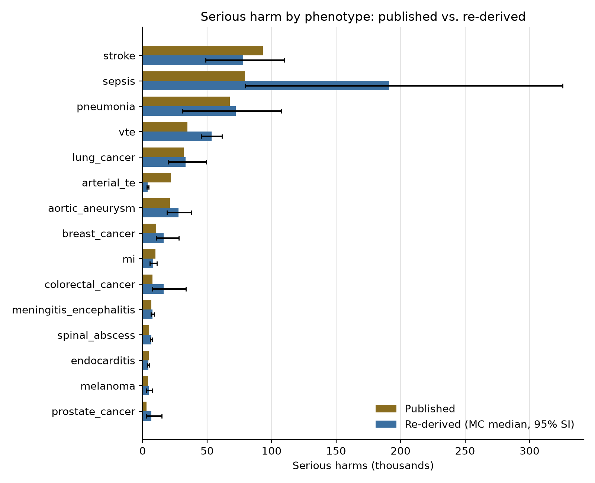
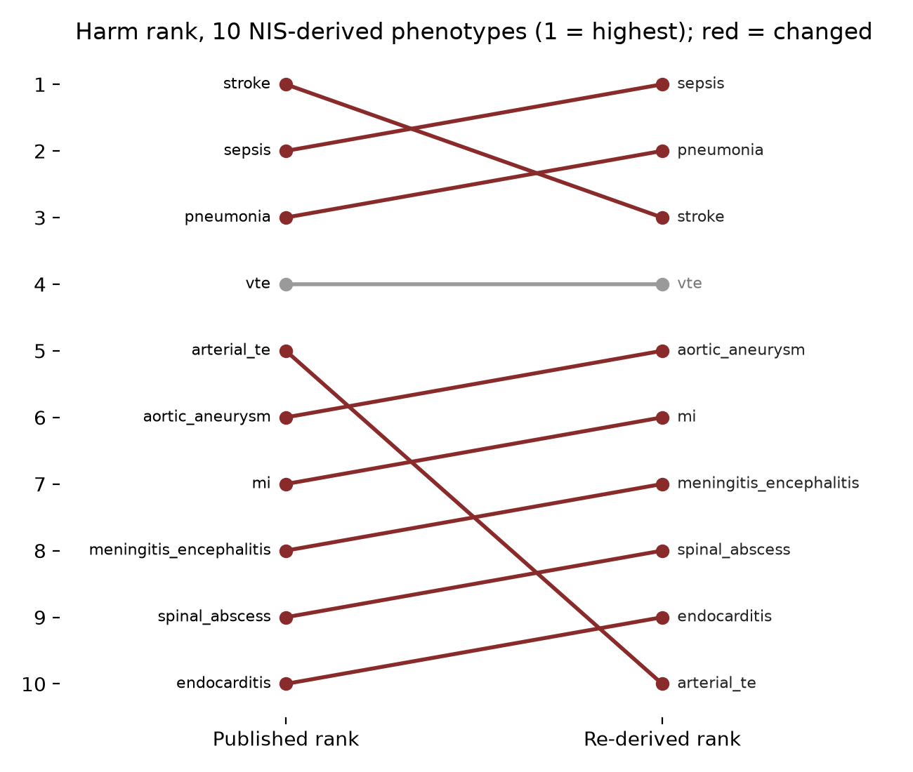
Top-5 share is the share of the grand total contributed by the five highest-harm phenotypes within each Monte Carlo draw; top5_fixed_published_set_rederived holds the published top five (stroke, sepsis, pneumonia, VTE, lung cancer) fixed instead. Top-15 share is the share from all fifteen named phenotypes.
| measure | published | rederived_median | rederived_p2_5 | rederived_p97_5 | abs_diff_pp | published_in_interval | threshold_pp | met |
|---|---|---|---|---|---|---|---|---|
| Top-5 share | 0.3870 | 0.4393 | 0.3669 | 0.4995 | 5.2307 | True | 5.0000 | False |
| Top-15 share | 0.5070 | 0.5454 | 0.4881 | 0.5959 | 3.8397 | True | 5.0000 | True |
Published top-5 set held fixed: 43.7% of re-derived total harm.
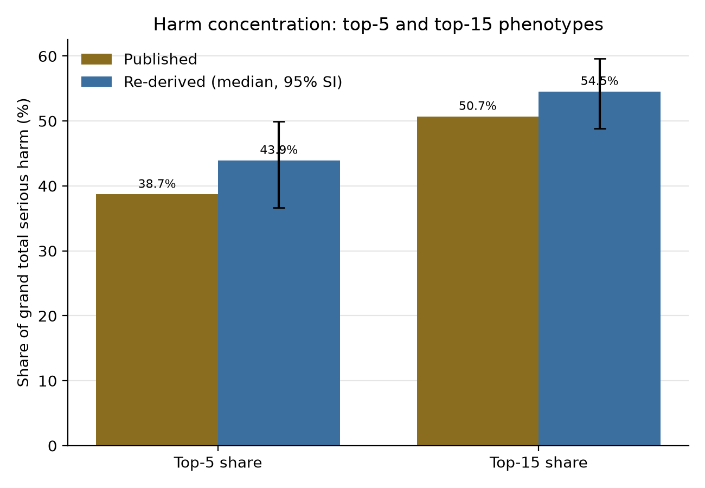
Share of grand total harm by Big Three category (named phenotypes plus that category's "other" bucket). The published comparison share is reconstructed from Table 1 point inputs, since the paper does not report category shares directly.
| category | published_share | share_median | share_p2_5 | share_p97_5 | diff_pp | published_in_interval |
|---|---|---|---|---|---|---|
| vascular | 0.2839 | 0.2221 | 0.1783 | 0.2769 | -6.1817 | False |
| infection | 0.3423 | 0.3920 | 0.3124 | 0.4579 | 4.9687 | True |
| cancer | 0.1318 | 0.1430 | 0.1086 | 0.1860 | 1.1211 | True |
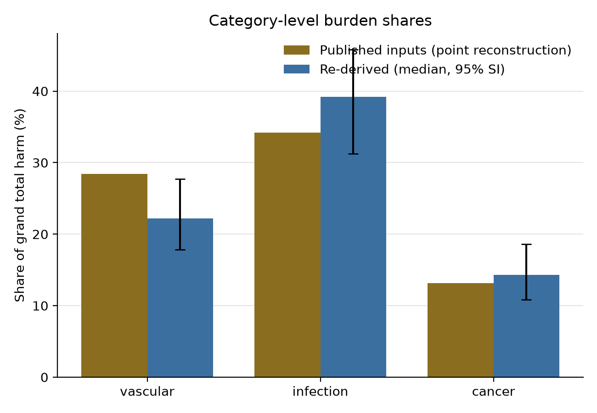
| published_median | published_range | rederived_median | rederived_range | relative_difference | published_median_in_rederived_range |
|---|---|---|---|---|---|
| 795 | (598, 1023) | 984.9 | (801.5596595045729, 1189.0051639282065) | 0.2389 | False |
Percentage reduction in grand total serious harm when incidence is restricted from DX1-or-DX2 to DX1 only, re-derived vs. published; scored on the absolute difference between the two reductions. The benchmark is the paper's own principal-diagnosis-only sensitivity analysis (p.113: “Using only principal diagnosis NIS codes … gave lower estimates by about 30% (grand totals 1.78 M missed diagnoses and 549000 serious harms)”). That analysis re-measured all vascular and infection incidence, including the “other” buckets, so the re-derived DX1-only run scales the published “other” vascular/infection incidence by each category's re-derived DX1-only / DX1-or-DX2 ratio (dx1_only_scale_*). dx1_only_relative_difference is reported for context, not scored.
| published_primary | published_dx1_only | published_reduction_pct | rederived_primary | rederived_dx1_only | rederived_dx1_only_range | rederived_reduction_pct | reduction_pct_abs_diff | dx1_only_relative_difference | dx1_only_scale_other_vascular | dx1_only_scale_other_infection |
|---|---|---|---|---|---|---|---|---|---|---|
| 795 | 549 | 0.3094 | 984.9 | 744.1 | (598.7641619322592, 909.5116141139958) | 0.2445 | 0.0649 | 0.3553 | 0.6898 | 0.6534 |
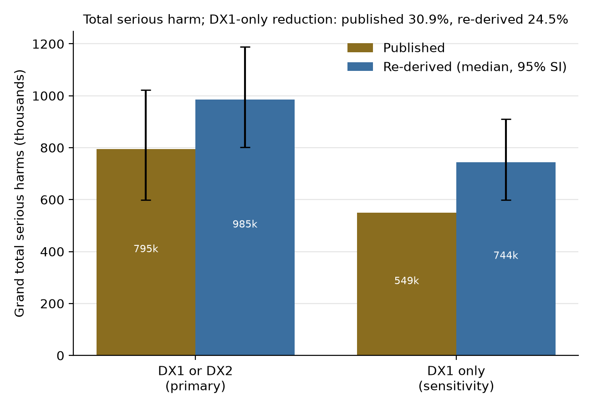
| metric | median | p2_5 | p97_5 |
|---|---|---|---|
| big3_errors_thousands | 1,808.2 | 1,426.6 | 2,235.2 |
| big3_harms_thousands | 746.6 | 607.6 | 901.3 |
| grand_total_errors_thousands | 3,091.0 | 2,438.7 | 3,820.8 |
| grand_total_harms_thousands | 984.9 | 801.6 | 1,189.0 |
| top15_harms_thousands | 536.1 | 407.3 | 681.4 |
| top5_harms_thousands | 431.8 | 305.6 | 575.3 |
| top15_share_of_grand_total | 0.5454 | 0.4881 | 0.5959 |
| top5_share_of_grand_total | 0.4393 | 0.3669 | 0.4995 |
| top5_fixed_share_of_grand_total | 0.4373 | 0.3638 | 0.4981 |
| metric | my_interval | published_interval | has_overlap | overlap_fraction | published_point_in_my_interval | my_point_in_published_interval |
|---|---|---|---|---|---|---|
| big3_errors_thousands | (1426.640061177279, 2235.1738826786172) | (1122, 1889) | True | 0.4154 | True | True |
| big3_harms_thousands | (607.5822219044663, 901.2659142575807) | (454, 776) | True | 0.3765 | False | True |
| grand_total_errors_thousands | (2438.7009592774, 3820.8100558608844) | (1918, 3230) | True | 0.4159 | True | True |
| grand_total_harms_thousands | (801.5596595045729, 1189.0051639282065) | (598, 1023) | True | 0.3747 | False | True |
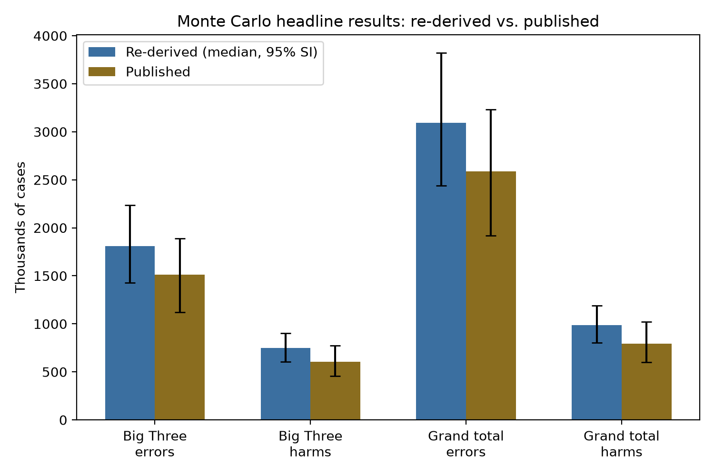
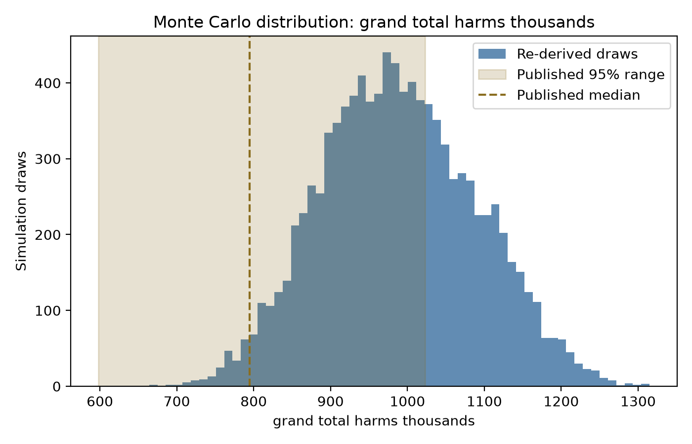
| disease | mean_rank | median_rank | rank_p5 | rank_p95 | p_top5 | p_top15 |
|---|---|---|---|---|---|---|
| sepsis | 1.1419 | 1.0000 | 1.0000 | 2.0000 | 0.9999 | 1.0000 |
| other_infection | 2.3224 | 2.0000 | 1.0000 | 4.0000 | 0.9927 | 1.0000 |
| stroke | 3.4488 | 3.0000 | 2.0000 | 5.0000 | 0.9532 | 1.0000 |
| pneumonia | 4.1791 | 4.0000 | 2.0000 | 7.0000 | 0.7989 | 1.0000 |
| other_cancer | 4.8887 | 5.0000 | 3.0000 | 7.0000 | 0.7069 | 1.0000 |
| vte | 5.5462 | 6.0000 | 4.0000 | 7.0000 | 0.4507 | 1.0000 |
| other_vascular | 6.6714 | 7.0000 | 5.0000 | 8.0000 | 0.0930 | 1.0000 |
| lung_cancer | 8.2258 | 8.0000 | 7.0000 | 10.0000 | 0.0047 | 1.0000 |
| aortic_aneurysm | 8.8900 | 9.0000 | 8.0000 | 10.0000 | 0.0000 | 1.0000 |
| breast_cancer | 10.4379 | 10.0000 | 9.0000 | 11.0000 | 0.0000 | 1.0000 |
| colorectal_cancer | 10.5101 | 11.0000 | 9.0000 | 13.0000 | 0.0000 | 1.0000 |
| mi | 12.8639 | 13.0000 | 11.0000 | 15.0000 | 0.0000 | 0.9871 |
| meningitis_encephalitis | 13.1758 | 13.0000 | 12.0000 | 15.0000 | 0.0000 | 0.9965 |
| prostate_cancer | 14.2513 | 14.0000 | 11.0000 | 18.0000 | 0.0000 | 0.6828 |
| spinal_abscess | 14.2736 | 14.0000 | 13.0000 | 15.0000 | 0.0000 | 0.9635 |
| melanoma | 16.2700 | 16.0000 | 14.0000 | 18.0000 | 0.0000 | 0.2551 |
| endocarditis | 16.5111 | 17.0000 | 15.0000 | 18.0000 | 0.0000 | 0.0980 |
| arterial_te | 17.3920 | 18.0000 | 16.0000 | 18.0000 | 0.0000 | 0.0170 |
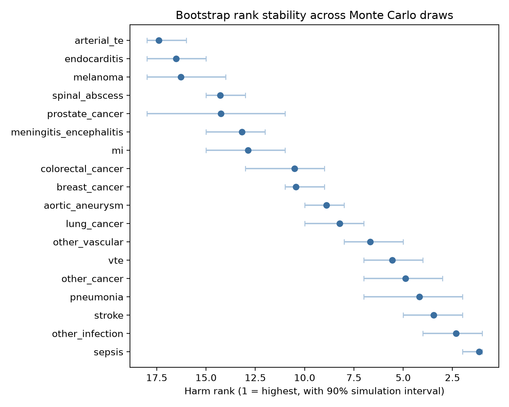
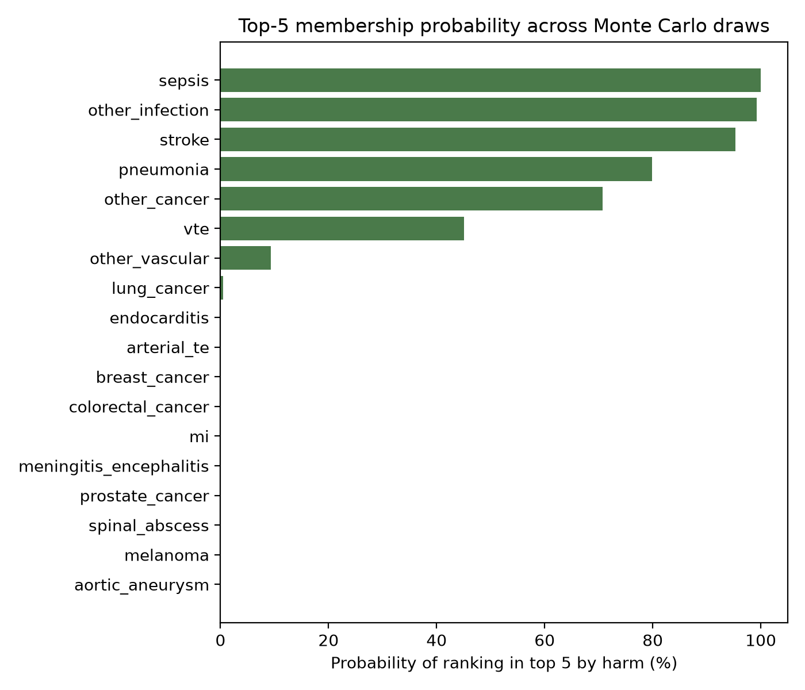
Each of 1,000 Monte Carlo draws per structure is clustered (ward linkage) on per-phenotype log serious harm; disease category is deliberately not a feature, since it is identical in both structures by construction. The published structure's draws sample the published harm- and error-rate uncertainty at published incidence. Draws are pooled into a co-clustering matrix (share of draws in which two phenotypes share a cluster), and a consensus clustering is cut from it. Tiers are numbered by harm (1 = highest). k = 5 was selected by silhouette on the published structure only. Structural characterization only; not an H3 criterion.
| k | silhouette_published |
|---|---|
| 2 | 0.5856 |
| 3 | 0.6564 |
| 4 | 0.6636 |
| 5 | 0.6674 |
| consensus_ARI_all_15 | permutation_p | null_ARI_mean | consensus_ARI_10_NIS_derived | per_draw_ARI_median | per_draw_ARI_p2_5 | per_draw_ARI_p97_5 | same_tier_all_15 | same_tier_10_NIS_derived |
|---|---|---|---|---|---|---|---|---|
| 0.2936 | 0.0145 | -0.0003 | 0.1541 | 0.1954 | 0.0294 | 0.4674 | 8 | 5 |
*_within_tier_coclustering: how often a phenotype lands with the rest of its consensus tier (higher = more stable); *_max_outside_coclustering: its strongest pull toward another tier (lower = more distinct).
| disease | independent | published_median_harm_thousands | rederived_median_harm_thousands | published_tier | rederived_tier | same_tier | published_within_tier_coclustering | published_max_outside_coclustering | rederived_within_tier_coclustering | rederived_max_outside_coclustering |
|---|---|---|---|---|---|---|---|---|---|---|
| stroke | True | 96.9388 | 77.1923 | 1 | 2 | False | 0.6790 | 0.0120 | 0.7710 | 0.2450 |
| sepsis | True | 84.1659 | 191.9 | 1 | 1 | True | 0.6775 | 0.1390 | NaN | 0.2450 |
| pneumonia | True | 63.5287 | 72.1765 | 1 | 2 | False | 0.5815 | 0.3140 | 0.7665 | 0.2600 |
| vte | True | 35.0263 | 53.3093 | 2 | 2 | True | 0.8190 | 0.3140 | 0.7325 | 0.3980 |
| lung_cancer | False | 33.5924 | 33.6130 | 2 | 3 | False | 0.8190 | 0.3790 | 0.4947 | 0.3980 |
| arterial_te | True | 22.0949 | 3.9227 | 3 | 5 | False | 0.6153 | 0.3790 | 0.8765 | 0.3950 |
| aortic_aneurysm | True | 21.3495 | 28.2452 | 3 | 3 | True | 0.6070 | 0.3530 | 0.5827 | 0.2070 |
| breast_cancer | False | 16.3118 | 16.2504 | 3 | 3 | True | 0.5227 | 0.3940 | 0.4907 | 0.2770 |
| colorectal_cancer | False | 15.7131 | 16.2033 | 3 | 3 | True | 0.4463 | 0.4050 | 0.4867 | 0.3180 |
| mi | True | 10.3244 | 8.2283 | 4 | 4 | True | NaN | 0.4480 | 0.7630 | 0.3180 |
| meningitis_encephalitis | True | 6.9673 | 7.6200 | 5 | 4 | False | 0.5315 | 0.4480 | 0.7833 | 0.3440 |
| prostate_cancer | False | 6.9091 | 7.2279 | 5 | 4 | False | 0.4647 | 0.4180 | 0.5027 | 0.4380 |
| spinal_abscess | True | 5.1594 | 6.7772 | 5 | 4 | False | 0.7100 | 0.0720 | 0.7750 | 0.3970 |
| melanoma | False | 4.7933 | 4.7415 | 5 | 5 | True | 0.6738 | 0.1020 | 0.7735 | 0.4380 |
| endocarditis | True | 4.7095 | 4.4320 | 5 | 5 | True | 0.7080 | 0.0590 | 0.8720 | 0.3920 |
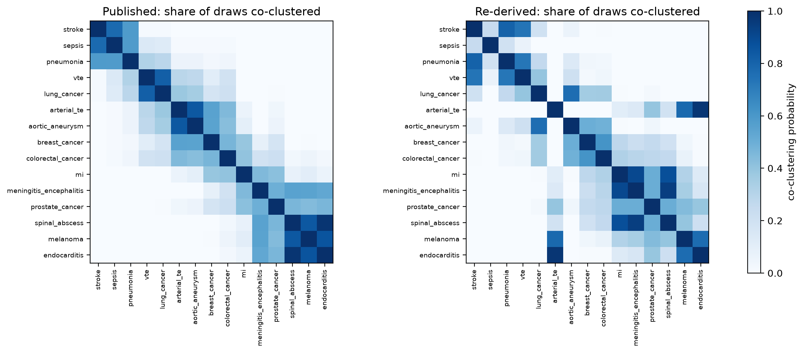
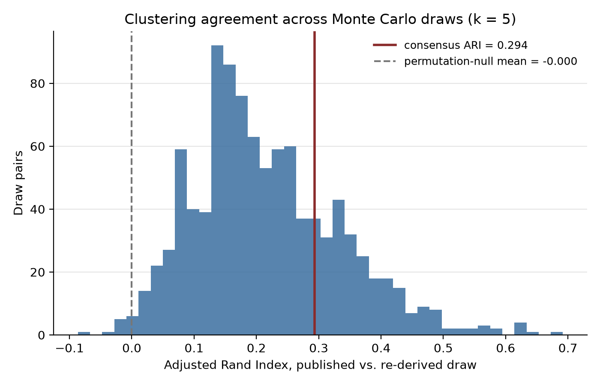
The earlier single-shot comparison: Ward clustering on standardized incidence, harm, harm rank and category, cut at k = 4, fitted once to each structure's point estimates. Category inflates its agreement; it is retained for continuity.
| structure_a | structure_b | adjusted_rand_index |
|---|---|---|
| published | rederived | 0.8331 |
| disease | harm_thousands_published | harm_rank_published | cluster_published | harm_thousands_rederived | harm_rank_rederived | cluster_rederived |
|---|---|---|---|---|---|---|
| meningitis_encephalitis | 6.9090 | 11.0000 | 1 | 7.5881 | 10.0000 | 3 |
| spinal_abscess | 5.1380 | 12.0000 | 1 | 6.7014 | 11.0000 | 3 |
| endocarditis | 4.6920 | 13.0000 | 1 | 4.4061 | 12.0000 | 3 |
| lung_cancer | 31.8080 | 5.0000 | 2 | 31.8080 | 5.0000 | 4 |
| breast_cancer | 10.5750 | 8.0000 | 2 | 10.5750 | 7.0000 | 4 |
| colorectal_cancer | 7.6720 | 10.0000 | 2 | 7.6720 | 9.0000 | 4 |
| melanoma | 4.3320 | 14.0000 | 2 | 4.3320 | 13.0000 | 4 |
| prostate_cancer | 3.0290 | 15.0000 | 2 | 3.0290 | 15.0000 | 4 |
| vte | 34.8800 | 4.0000 | 3 | 53.0919 | 4.0000 | 2 |
| arterial_te | 21.9710 | 6.0000 | 3 | 3.8718 | 14.0000 | 2 |
| aortic_aneurysm | 21.2160 | 7.0000 | 3 | 27.6511 | 6.0000 | 2 |
| mi | 9.9360 | 9.0000 | 3 | 7.9113 | 8.0000 | 2 |
| stroke | 93.2960 | 1.0000 | 4 | 75.2653 | 3.0000 | 2 |
| sepsis | 79.3550 | 2.0000 | 4 | 173.9 | 1.0000 | 1 |
| pneumonia | 67.5740 | 3.0000 | 4 | 77.1435 | 2.0000 | 1 |
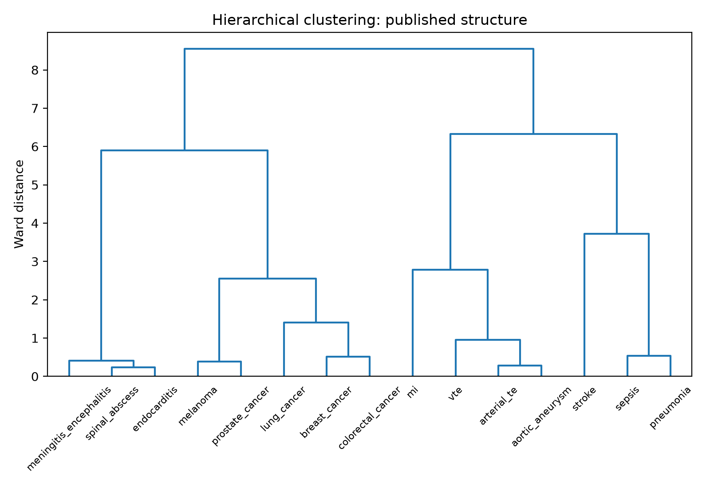
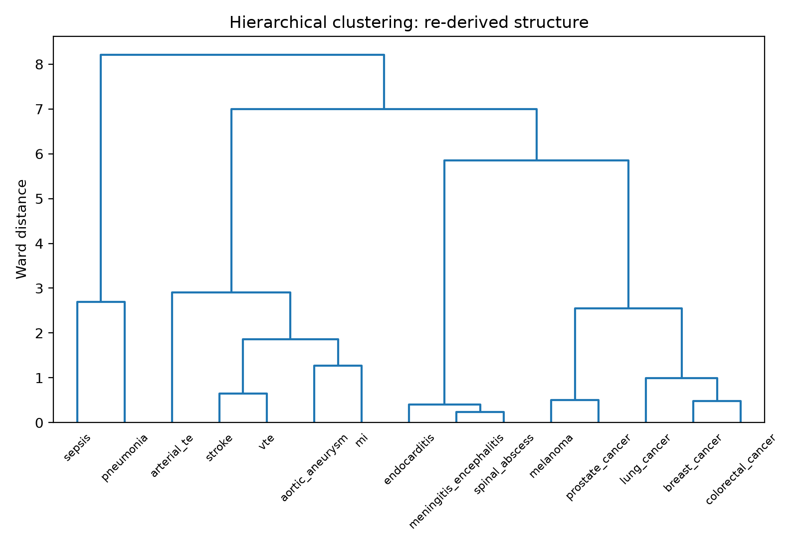
55.6% of 243 alternative threshold configurations (full-factorial grid centred on config.yaml) yield H3_SUPPORTED. Criteria met per grid point ranged from 2 to 7 of 7 scored.
| criterion | share_of_grid_met |
|---|---|
| criterion_1 | 0.6667 |
| criterion_2 | 0.6667 |
| criterion_3 | 0.3333 |
| criterion_4 | 0.6667 |
| criterion_6 | 0.3333 |
| criterion_7 | 1.0000 |
| criterion_8 | 1.0000 |
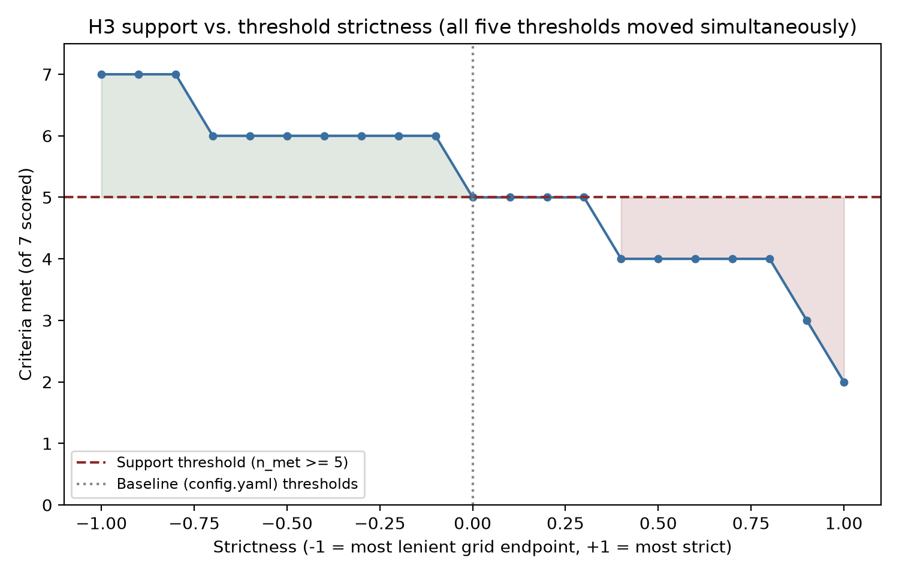
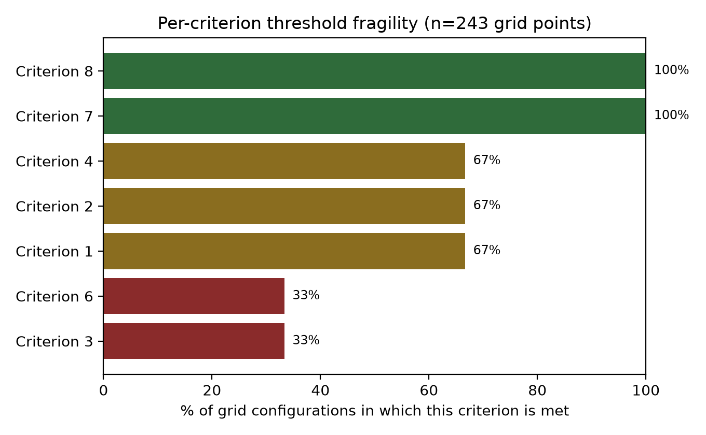
| min_criteria_met | support_rate |
|---|---|
| 4 | 0.8395 |
| 5 | 0.5556 |
| 6 | 0.2469 |
| 7 | 0.0494 |
H3 is judged jointly on the eight prespecified criteria; criterion 5 is descriptive, the other seven are scored.
| criterion | name | result | threshold | met |
|---|---|---|---|---|
| 1 | Disease-specific incidence relative difference | 50% of phenotypes within threshold | |rel diff| <= 25% for >= 50% of phenotypes | yes |
| 2 | Rank-correlation of harm rankings | Spearman r = 0.782 (10 NIS-derived phenotypes) | r >= 0.70 | yes |
| 3 | Top-5 harm-concentration difference | 43.9% vs 38.7% (5.2 pp) | <= 5.0 pp | no |
| 4 | Top-15 harm-concentration difference | 54.5% vs 50.7% (3.8 pp) | <= 5.0 pp | yes |
| 5 | Category-level burden-share stability | max category shift 6.2 pp; published share in interval for 2/3 categories | descriptive | descriptive |
| 6 | Total serious-harm relative difference | +23.9% | |rel diff| <= 20% | no |
| 7 | Monte Carlo uncertainty overlap | 4/4 headline intervals overlap | all overlap | yes |
| 8 | DX1-only sensitivity comparison | DX1-only reduction 24.5% vs published 30.9% (6.5 pp) | <= 15 pp | yes |
criterion_1 {'share_diseases_within_threshold': 0.5, 'thre...
criterion_2 {'spearman_r': 0.7818181818181817, 'threshold'...
criterion_3 {'abs_diff_pp': 5.230730727676103, 'threshold_...
criterion_4 {'abs_diff_pp': 3.8396562436096127, 'threshold...
criterion_5 {'per_category': [{'category': 'vascular', 'pu...
criterion_6 {'relative_difference': 0.2389229284850032, 't...
criterion_7 {'big3_errors_thousands': {'has_overlap': True...
criterion_8 {'reduction_pct_abs_diff': 0.06488572426031464...
n_scored_criteria_met 5
n_scored_criteria_total 7
min_criteria_required 5
H3_SUPPORTED True
note All thresholds in criteria_thresholds are unve...
The eight criteria ask whether individual summary numbers replicate. This appendix asks a structurally different question: does the multidimensional grouping of the fifteen phenotypes by burden profile - incidence, harm, harm-uncertainty width, and disease category jointly, not any one of them in isolation - replicate between the published and re-derived structures? Two clusterings are fit completely independently (never projecting one dataset's labels onto the other) and compared by Adjusted Rand Index (ARI) and Normalized Mutual Information (NMI), against a permutation null appropriate to only fifteen units of observation.
k is selected by silhouette score on the published structure only, then applied identically to both structures, so k is not chosen in a way that could favor agreement. Selected: k = 4.
| k | silhouette_score |
|---|---|
| 4 | 0.5944 |
| 2 | 0.4421 |
| 3 | 0.4189 |
| observed_ari | observed_nmi | p_value_ari | p_value_nmi | null_ari_mean | null_nmi_mean | n_permutations | verdict |
|---|---|---|---|---|---|---|---|
| 0.7305 | 0.7958 | 0.0001 | 0.0001 | -0.0003 | 0.2864 | 10000 | strong agreement |
| observed_ari | observed_nmi | p_value_ari | p_value_nmi | null_ari_mean | null_nmi_mean | n_permutations | verdict |
|---|---|---|---|---|---|---|---|
| 0.8331 | 0.8905 | 0.0001 | 0.0001 | -0.0002 | 0.2991 | 10000 | strong agreement |
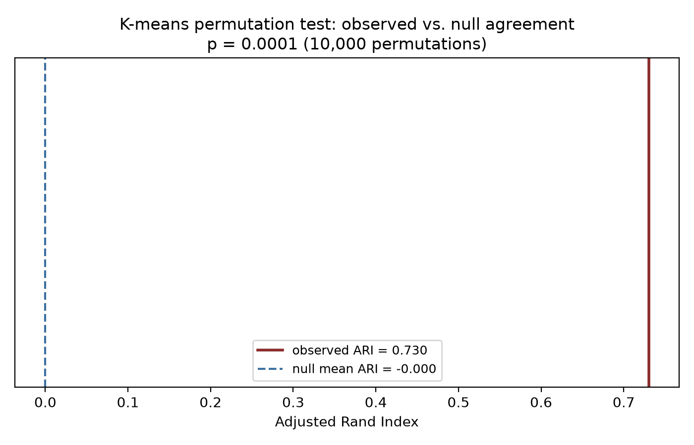
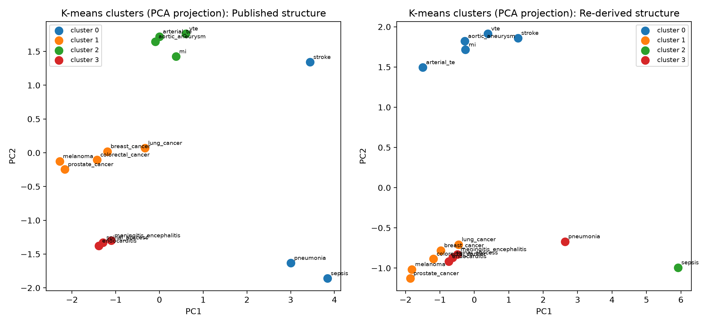
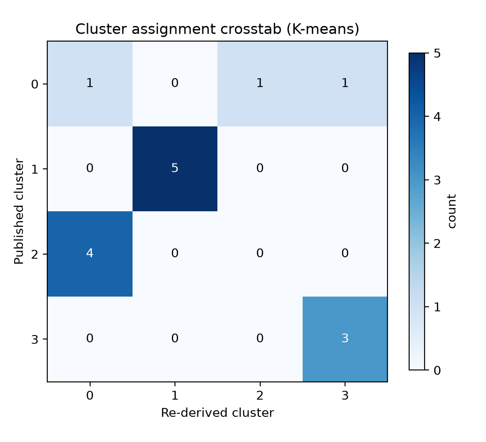
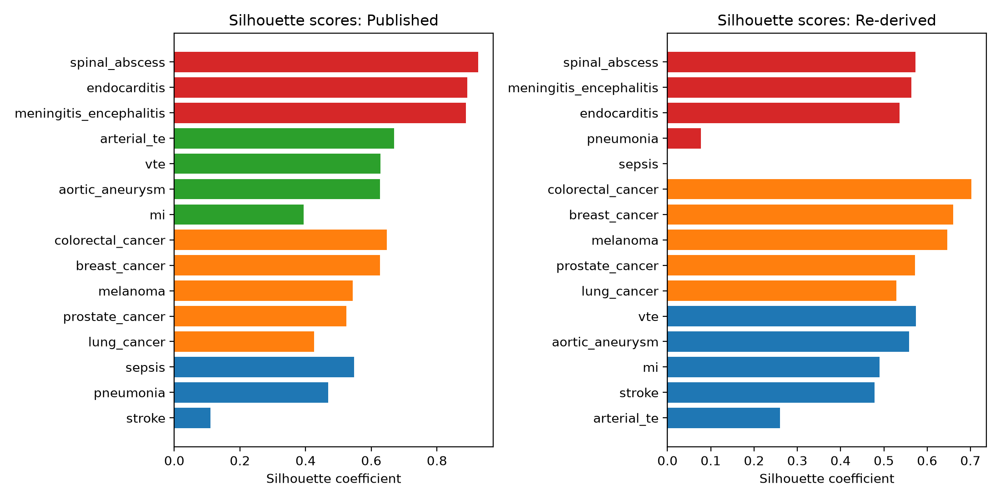
| k | algorithm | adjusted_rand_index | normalized_mutual_info |
|---|---|---|---|
| 2 | kmeans | 0.6831 | 0.5943 |
| 2 | hierarchical | 0.6831 | 0.5943 |
| 3 | kmeans | 0.8763 | 0.8514 |
| 3 | hierarchical | 0.8763 | 0.8514 |
| 4 | kmeans | 0.7305 | 0.7958 |
| 4 | hierarchical | 0.8331 | 0.8905 |
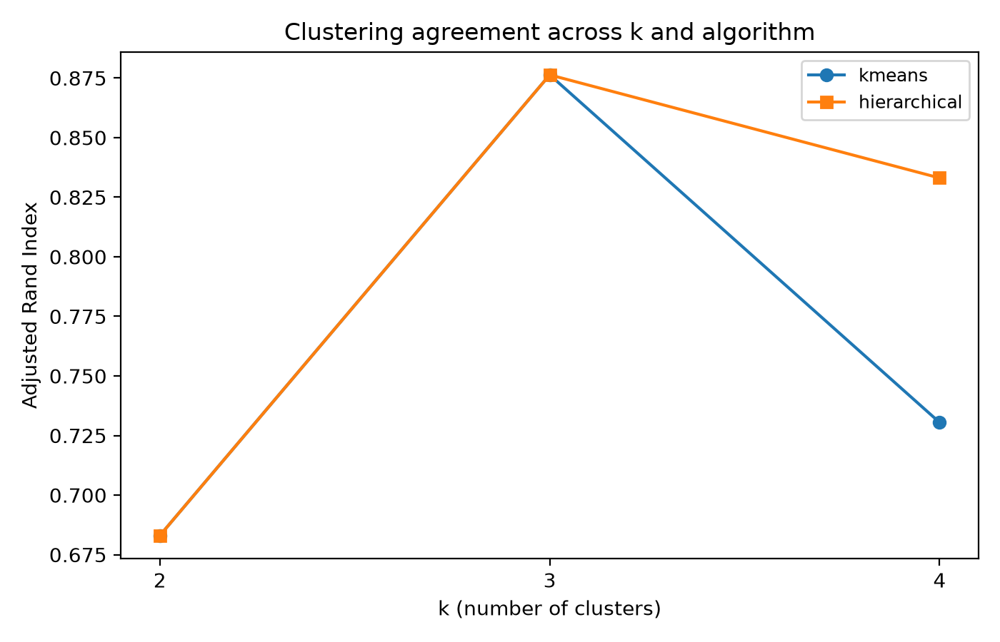
Repeats the primary clustering with features added or removed, to test which feature groups drive the observed agreement.
| feature_set | algorithm | adjusted_rand_index | normalized_mutual_info |
|---|---|---|---|
| full (incidence+harm+rank+uncertainty+category) | kmeans | 0.7305 | 0.7958 |
| full (incidence+harm+rank+uncertainty+category) | hierarchical | 0.8331 | 0.8905 |
| no uncertainty | kmeans | 0.8331 | 0.8905 |
| no uncertainty | hierarchical | 0.8331 | 0.8905 |
| no category | kmeans | 0.4113 | 0.5857 |
| no category | hierarchical | 0.2556 | 0.5101 |
| minimal (incidence+harm+rank only) | kmeans | 0.3182 | 0.4946 |
| minimal (incidence+harm+rank only) | hierarchical | 0.5238 | 0.6268 |
Recomputes primary agreement with each of the fifteen phenotypes held out in turn, checking whether the result depends heavily on any single disease.
| held_out_disease | adjusted_rand_index | normalized_mutual_info |
|---|---|---|
| stroke | 1.0000 | 1.0000 |
| vte | 0.8369 | 0.8896 |
| arterial_te | 0.8369 | 0.8896 |
| aortic_aneurysm | 0.8369 | 0.8896 |
| mi | 0.8369 | 0.8896 |
| sepsis | 1.0000 | 1.0000 |
| pneumonia | 0.8480 | 0.8927 |
| meningitis_encephalitis | 0.7264 | 0.7873 |
| spinal_abscess | 0.8144 | 0.8800 |
| endocarditis | 0.8144 | 0.8800 |
| lung_cancer | 0.6805 | 0.7829 |
| breast_cancer | 0.6805 | 0.7829 |
| colorectal_cancer | 0.6805 | 0.7829 |
| melanoma | 0.6805 | 0.7829 |
| prostate_cancer | 0.6805 | 0.7829 |
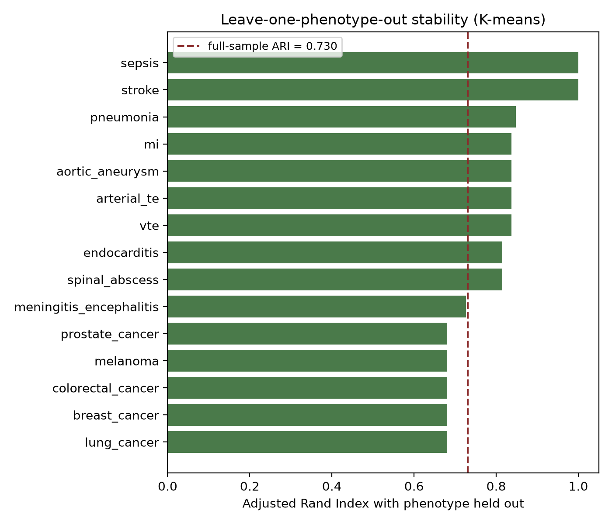
| held_out_disease | adjusted_rand_index | normalized_mutual_info |
|---|---|---|
| stroke | 1.0000 | 1.0000 |
| vte | 0.8369 | 0.8896 |
| arterial_te | 0.8369 | 0.8896 |
| aortic_aneurysm | 0.8369 | 0.8896 |
| mi | 0.8369 | 0.8896 |
| sepsis | 1.0000 | 1.0000 |
| pneumonia | 0.8480 | 0.8927 |
| meningitis_encephalitis | 0.8144 | 0.8800 |
| spinal_abscess | 0.8144 | 0.8800 |
| endocarditis | 0.8144 | 0.8800 |
| lung_cancer | 0.8006 | 0.8837 |
| breast_cancer | 0.8006 | 0.8837 |
| colorectal_cancer | 0.8006 | 0.8837 |
| melanoma | 0.8006 | 0.8837 |
| prostate_cancer | 0.8006 | 0.8837 |
| disease | category | incidence_thousands | harm_thousands | harm_rank | harm_uncertainty_width | cat_cancer | cat_infection | cat_vascular |
|---|---|---|---|---|---|---|---|---|
| stroke | vascular | 952 | 93.2960 | 1.0000 | 75.4841 | False | False | True |
| vte | vascular | 320 | 34.8800 | 4.0000 | 10.4708 | False | False | True |
| arterial_te | vascular | 173 | 21.9710 | 6.0000 | 8.2214 | False | False | True |
| aortic_aneurysm | vascular | 96 | 21.2160 | 7.0000 | 14.5064 | False | False | True |
| mi | vascular | 1242 | 9.9360 | 9.0000 | 6.7211 | False | False | True |
| sepsis | infection | 1345 | 79.3550 | 2.0000 | 110.8 | False | True | False |
| pneumonia | infection | 1469 | 67.5740 | 3.0000 | 67.1619 | False | True | False |
| meningitis_encephalitis | infection | 47 | 6.9090 | 11.0000 | 2.3001 | False | True | False |
| spinal_abscess | infection | 14 | 5.1380 | 12.0000 | 1.1634 | False | True | False |
| endocarditis | infection | 34 | 4.6920 | 13.0000 | 1.2993 | False | True | False |
| lung_cancer | cancer | 224 | 31.8080 | 5.0000 | 29.5847 | True | False | False |
| breast_cancer | cancer | 235 | 10.5750 | 8.0000 | 17.8208 | True | False | False |
| colorectal_cancer | cancer | 137 | 7.6720 | 10.0000 | 25.9826 | True | False | False |
| melanoma | cancer | 76 | 4.3320 | 14.0000 | 4.5888 | True | False | False |
| prostate_cancer | cancer | 233 | 3.0290 | 15.0000 | 12.1331 | True | False | False |
| disease | category | incidence_thousands | harm_thousands | harm_rank | harm_uncertainty_width | cat_cancer | cat_infection | cat_vascular |
|---|---|---|---|---|---|---|---|---|
| stroke | vascular | 768.0 | 75.2653 | 3.0000 | 60.8958 | False | False | True |
| vte | vascular | 487.1 | 53.0919 | 4.0000 | 15.9379 | False | False | True |
| arterial_te | vascular | 30.4866 | 3.8718 | 14.0000 | 1.4488 | False | False | True |
| aortic_aneurysm | vascular | 125.1 | 27.6511 | 6.0000 | 18.9064 | False | False | True |
| mi | vascular | 988.9 | 7.9113 | 8.0000 | 5.3515 | False | False | True |
| sepsis | infection | 2,947.5 | 173.9 | 1.0000 | 242.7 | False | True | False |
| pneumonia | infection | 1,677.0 | 77.1435 | 2.0000 | 76.6730 | False | True | False |
| meningitis_encephalitis | infection | 51.6200 | 7.5881 | 10.0000 | 2.5262 | False | True | False |
| spinal_abscess | infection | 18.2600 | 6.7014 | 11.0000 | 1.5174 | False | True | False |
| endocarditis | infection | 31.9283 | 4.4061 | 12.0000 | 1.2202 | False | True | False |
| lung_cancer | cancer | 224.0 | 31.8080 | 5.0000 | 29.5847 | True | False | False |
| breast_cancer | cancer | 235.0 | 10.5750 | 7.0000 | 17.8208 | True | False | False |
| colorectal_cancer | cancer | 137.0 | 7.6720 | 9.0000 | 25.9826 | True | False | False |
| melanoma | cancer | 76.0000 | 4.3320 | 13.0000 | 4.5888 | True | False | False |
| prostate_cancer | cancer | 233.0 | 3.0290 | 15.0000 | 12.1331 | True | False | False |
Identifies which individual phenotypes diverge most between published and re-derived incidence, using the full relative/absolute-difference feature space. Exploratory only, not a decision criterion for either track.
| disease | published_incidence_thousands | rederived_incidence_thousands | relative_difference | absolute_difference | anomaly_score | flagged_anomalous |
|---|---|---|---|---|---|---|
| sepsis | 1345 | 2,947.5 | 1.1915 | 1,602.5 | 0.2438 | True |
| pneumonia | 1469 | 1,677.0 | 0.1416 | 208.0 | 0.1049 | True |
| arterial_te | 173 | 30.4866 | -0.8238 | -142.5 | 0.0512 | True |
| mi | 1242 | 988.9 | -0.2038 | -253.1 | 0.0499 | True |
| vte | 320 | 487.1 | 0.5221 | 167.1 | 0.0347 | True |
| stroke | 952 | 768.0 | -0.1933 | -184.0 | 0.0119 | True |
| spinal_abscess | 14 | 18.2600 | 0.3043 | 4.2600 | -0.0738 | False |
| aortic_aneurysm | 96 | 125.1 | 0.3033 | 29.1183 | -0.0739 | False |
| endocarditis | 34 | 31.9283 | -0.0609 | -2.0717 | -0.1093 | False |
| meningitis_encephalitis | 47 | 51.6200 | 0.0983 | 4.6200 | -0.1197 | False |
| breast_cancer | 235 | 235.0 | 0.0000 | 0.0000 | -0.1322 | False |
| melanoma | 76 | 76.0000 | 0.0000 | 0.0000 | -0.1337 | False |
| lung_cancer | 224 | 224.0 | 0.0000 | 0.0000 | -0.1342 | False |
| prostate_cancer | 233 | 233.0 | 0.0000 | 0.0000 | -0.1348 | False |
| colorectal_cancer | 137 | 137.0 | 0.0000 | 0.0000 | -0.1349 | False |
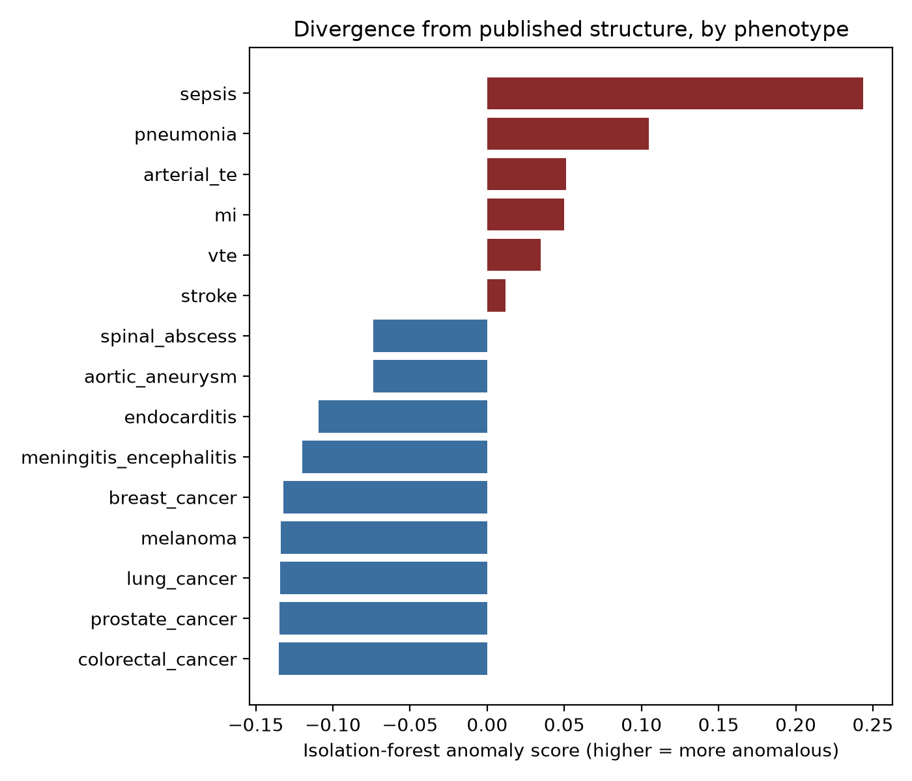